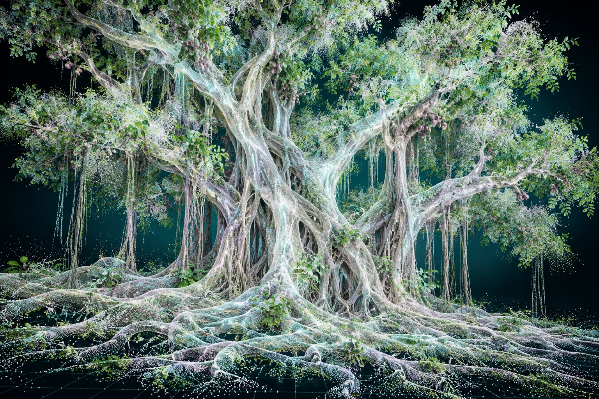

Map what you can build on
Your roots represent your overall capacities: skills, experience, time and energy. They are the starting point for choosing what to grow.
04 / A CONCEPT IN DEVELOPMENT
An accountability-buddy agent for growing your capacities
and exploring the futures they might open up.

“Rooted in what you can do.
Growing toward what you can become.”
The main idea
Inspired by Sylvia Plath’s fig-tree metaphor, this project explores a different way of navigating career choices: start with your roots, grow your capacities, and discover how different branches can connect.
In an unpredictable AI-shaped job market, the aim is to make possibilities easier to see — and to turn those possibilities into intentional action.
THE IDEA
Your roots represent your overall capacities: skills, experience, time and energy. They are the starting point for choosing what to grow.
Invest in a branch through learning and practice. As it grows, new possibilities open up. Step back from branches that no longer fit your goals or capacity.
The proposed agent would help you explore potential pathways: what could this skill become, what would it take, and how might it fit an evolving market? These would be possibilities to investigate, not predictions.
A computer science degree and an art practice could come together in creative coding or visual art. The agent would help surface combinations that fit your interests, skill set and opportunities.
BREADTH ↔ SPECIALISATION
More branches can support a broader practice. Fewer, deeply developed or closely connected branches can create a specialisation. The project is about choosing that balance deliberately.
More details to come